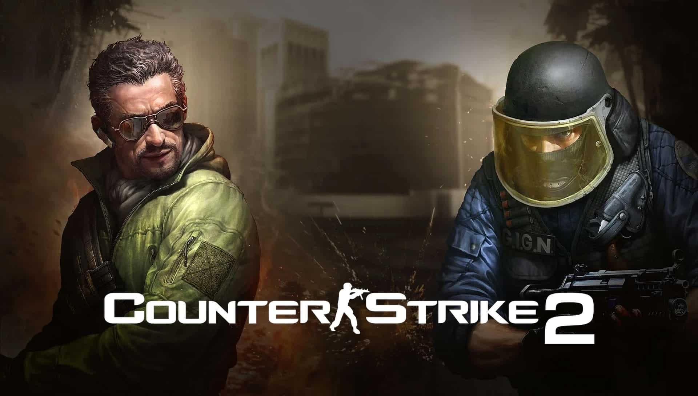

Counter-Strike 2 parece una realidad y su beta llegaría a finales de marzo

El legendario juego de Valve recibiría una nueva versión oficial más de 10 años después del lanzamiento de Global Offensive y revolucionaría el sector de los videojuegos, sobre todo por la falta de anuncios oficiales previos.
Ahora, dos décadas después de su lanzamiento en 1999 y más de 10 años tras la última actualización grande, Global Offensive, parece que llega Counter-Strike 2 y no, no es ninguna coña del nivel de Half Life 3.
Creado a través de un mod de Half Life, el Counter, como todos lo llamamos, ha estado presente en la vida del 99% de los amantes de los videojuegos e independientemente de la edad que tengan.
Desde los más viejunos como yo, que vivimos la época de cibers con los colegas en el barrio hasta los más jovenzuelos que, aunque no lo valoren del todo, pueden viciar a CS:GO de manera gratuita.